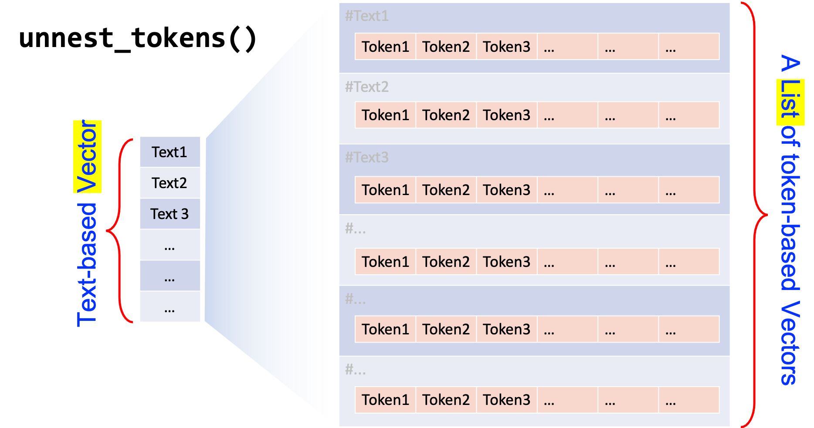
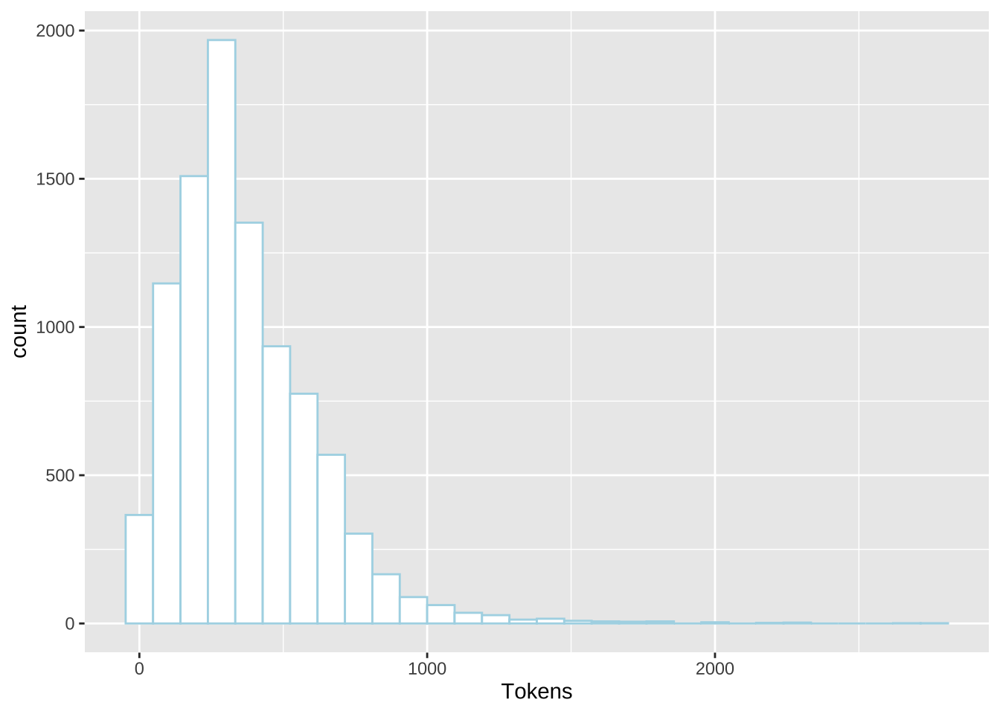
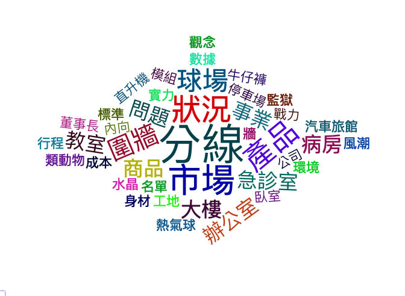

Chapter 7 Chinese Text Processing
In this chapter, we will turn to the topic of Chinese text processing. In particular, we will discuss one of the most important issues in Chinese language processing, i.e., word segmentation.
When we discuss English parts-of-speech tagging in Chapter 5, it is easy to perform (word) tokenization on English texts because the word boundaries in English are more clearly delimited by whitespaces. Chinese, however, does not have whitespaces between characters, which leads to a serious problem for word tokenization.
We will look at the issues of word tokenization and talk about the most-often used library, jiebaR, for Chinese word segmentation. Also, we will include several case studies on Chinese text processing.
In later Chapter 9, we will introduce another segmenter developed by the CKIP Group at the Academia Sinica. The CKIP Tagger seems to be the state-of-art tagger for Taiwan Mandarin, i.e., with more additional functionalities.
library(tidyverse)
library(tidytext)
library(quanteda)
library(stringr)
library(jiebaR)
library(readtext)7.1 Chinese Word Segmenter jiebaR
7.1.1 Start
First, if you haven’t installed the library jiebaR, you may need to install it manually:
install.packages("jiebaR")
library("jiebaR")This is the version used for this tutorial.
packageVersion("jiebaR")[1] '0.11'Now let us take a look at a quick example. Let us assume that in our corpus, we have collected only one text document, with only a short paragraph.
text <- "綠黨桃園市議員王浩宇爆料，指民眾黨不分區被提名人蔡壁如、黃瀞瑩，在昨（6）日才請辭是為領年終獎金。台灣民眾黨主席、台北市長柯文哲7日受訪時則說，都是按流程走，不要把人家想得這麼壞。"There are two important steps in Chinese word segmentation:
- Initialize a
jiebarobject usingworker() - Tokenize the texts into words using the function
segment()with the designatedjiebarobject created earlier
seg1 <- worker()
segment(text, jiebar = seg1) [1] "綠黨" "桃園市" "議員" "王浩宇" "爆料" "指民眾"
[7] "黨" "不" "分區" "被" "提名" "人"
[13] "蔡壁如" "黃" "瀞" "瑩" "在昨" "6"
[19] "日" "才" "請辭" "是" "為領" "年終獎金"
[25] "台灣民眾" "黨" "主席" "台北" "市長" "柯文"
[31] "哲" "7" "日" "受訪" "時則" "說"
[37] "都" "是" "按" "流程" "走" "不要"
[43] "把" "人家" "想得" "這麼" "壞" class(seg1)[1] "jiebar" "segment" "jieba" To word-tokenize the document, text, you first initialize a jiebar object, i.e., seg1, using worker() and feed this jiebar to segment(jiebar = seg1)and tokenize text into words.
7.1.2 Parameters Setting
There are many different parameters you can specify when you initialize the jiebar object. You may get more detail via the documentation ?worker(). Some of the important arguments include:
user = ...: This argument is to specify the path to a user-defined dictionarystop_word = ...: This argument is to specify the path to a stopword listsymbol = FALSE: Whether to return symbols (the default is FALSE)bylines = FALSE: Whether to return a list or not (crucial if you are usingtidytext::unnest_tokens())
Exercise 7.1 In our earlier example, when we created the jiebar object named seg1, we did not specify any arguments for worker(). Can you tell what the default settings are for the parameters of worker()?
worker() with different settings (e.g., symbols = T, bylines = T) and see how the tokenization results differ from each other.
7.1.3 User-defined dictionary
From the above example, it is clear to see that some of the words have not been correctly identified by the current segmenter: for example, 民眾黨, 不分區, 黃瀞瑩, 柯文哲.
It is always recommended to include a user-defined dictionary when tokenizing your texts because different corpora may have their own unique vocabulary (i.e., domain-specific lexicon).
This can be done with the argument user = ... when you initialize the jiebar object, i.e, worker(..., user = ...).
seg2 <- worker(user = "demo_data/dict-ch-user-demo.txt")
segment(text, seg2) [1] "綠黨" "桃園市" "議員" "王浩宇" "爆料" "指"
[7] "民眾黨" "不分區" "被" "提名" "人" "蔡壁如"
[13] "黃瀞瑩" "在昨" "6" "日" "才" "請辭"
[19] "是" "為領" "年終獎金" "台灣" "民眾黨" "主席"
[25] "台北" "市長" "柯文哲" "7" "日" "受訪"
[31] "時則" "說" "都" "是" "按" "流程"
[37] "走" "不要" "把" "人家" "想得" "這麼"
[43] "壞" The format of the user-defined dictionary is a text file, with one word per line. Also, the default encoding of the dictionary is UTF-8.
Please note that in Windows, the default encoding of a Chinese
txt file created by Notepad may not be UTF-8. (Usually, it
is encoded in big-5).
Also, files created by MS Office applications tend to be less transparent in terms of their encoding.
Creating a user-defined dictionary may take a lot of time. You may consult 搜狗詞庫, which includes many domain-specific dictionaries created by others.
However, it should be noted that the format of the dictionaries is
.scel. You may need to convert the .scel to
.txt before you use it in jiebaR.
To do the conversion automatically, please consult the library cidian.
Also, you need to do the traditional-simplified Chinese conversion as
well. For this, you may consult the library ropencc in
R.
7.1.4 Stopwords
When you initialize the worker(), you can also specify a stopword list, i.e., words that you do not need to include in the later analyses.
For example, in text mining, functional words are usually less informative, thus often excluded in the process of preprocessing.
seg3 <- worker(user = "demo_data/dict-ch-user-demo.txt",
stop_word = "demo_data/stopwords-ch-demo.txt")
segment(text, seg3) [1] "綠黨" "桃園市" "議員" "王浩宇" "爆料" "指"
[7] "民眾黨" "不分區" "提名" "人" "蔡壁如" "黃瀞瑩"
[13] "在昨" "6" "才" "請辭" "為領" "年終獎金"
[19] "台灣" "民眾黨" "主席" "台北" "市長" "柯文哲"
[25] "7" "受訪" "時則" "說" "按" "流程"
[31] "走" "不要" "人家" "想得" "這麼" "壞" segment(text, seg2) were removed as compared to the results of segment(text, seg3)? (Note: seg2 and seg3 only differ in the stop_word=... argument.)
[1] "被" "日" "是" "都" "把"7.1.5 POS Tagging
So far we haven’t seen the parts-of-speech tags provided by the word segmenter. If you need the POS tags of the words, you need to specify the argument type = "tag" when you initialize the worker().
seg4 <- worker(type = "tag",
#dict = "demo_data/jieba-tw/dict.txt",
user = "demo_data/dict-ch-user-demo.txt",
stop_word = "demo_data/stopwords-ch-demo.txt",
symbol = F)
segment(text, seg4) n ns n n n n n
"綠黨" "桃園市" "議員" "王浩宇" "爆料" "指" "民眾黨"
n v n n n x x
"不分區" "提名" "人" "蔡壁如" "黃瀞瑩" "在昨" "6"
d v x n x n n
"才" "請辭" "為領" "年終獎金" "台灣" "民眾黨" "主席"
ns n n x v x zg
"台北" "市長" "柯文哲" "7" "受訪" "時則" "說"
p n v df n x r
"按" "流程" "走" "不要" "人家" "想得" "這麼"
a
"壞" The returned object is a named character vector, i.e., the POS tags of the words are included in the names of the vectors.
Every POS tagger has its own predefined tag set. The following table lists the annotations of the POS tag set used in jiebaR:
segment(text, seg4) into a long string as shown below?
[1] "綠黨/n 桃園市/ns 議員/n 王浩宇/n 爆料/n 指/n 民眾黨/n 不分區/n 提名/v 人/n 蔡壁如/n 黃瀞瑩/n 在昨/x 6/x 才/d 請辭/v 為領/x 年終獎金/n 台灣/x 民眾黨/n 主席/n 台北/ns 市長/n 柯文哲/n 7/x 受訪/v 時則/x 說/zg 按/p 流程/n 走/v 不要/df 人家/n 想得/x 這麼/r 壞/a"7.1.6 Default Word Lists in JiebaR
You can check the dictionaries and the stopword list being used by jiebaR in your current environment:
# show files under `dictpath`
dir(show_dictpath())[1] "/Library/Frameworks/R.framework/Versions/4.1/Resources/library/jiebaRD/dict"[1] "backup.rda" "hmm_model.zip" "idf.zip" "jieba.dict.zip"
[5] "model.rda" "README.md" "stop_words.utf8" "user.dict.utf8" # Check the default stop_words list
# Please change the path to your default dict path
# scan(file="/Library/Frameworks/R.framework/Versions/4.1/Resources/library/jiebaRD/dict/stop_words.utf8",
# what=character(),nlines=50,sep='\n',
# encoding='utf-8',fileEncoding='utf-8')
readLines("/Library/Frameworks/R.framework/Versions/4.1/Resources/library/jiebaRD/dict/stop_words.utf8",
encoding = "UTF-8",
n = 200) [1] "\"" "." "。" "," "、" "！" "？" "："
[9] "；" "`" "﹑" "•" "＂" "^" "…" "‘"
[17] "’" "“" "”" "〝" "〞" "~" "\\" "∕"
[25] "|" "¦" "‖" "— " "(" ")" "〈" "〉"
[33] "﹞" "﹝" "「" "」" "‹" "›" "〖" "〗"
[41] "】" "【" "»" "«" "』" "『" "〕" "〔"
[49] "》" "《" "}" "{" "]" "[" "﹐" "¸"
[57] "﹕" "︰" "﹔" ";" "！" "¡" "？" "¿"
[65] "﹖" "﹌" "﹏" "﹋" "＇" "´" "ˊ" "ˋ"
[73] "-" "―" "﹫" "@" "︳" "︴" "_" "¯"
[81] "＿" "￣" "﹢" "+" "﹦" "=" "﹤" "‐"
[89] "<" "" "˜" "~" "﹟" "#" "﹩" "$"
[97] "﹠" "&" "﹪" "%" "﹡" "*" "﹨" "\\"
[105] "﹍" "﹉" "﹎" "﹊" "ˇ" "︵" "︶" "︷"
[113] "︸" "︹" "︿" "﹀" "︺" "︽" "︾" "_"
[121] "ˉ" "﹁" "﹂" "﹃" "﹄" "︻" "︼" "的"
[129] "了" "the" "a" "an" "that" "those" "this" "that"
[137] "$" "0" "1" "2" "3" "4" "5" "6"
[145] "7" "8" "9" "?" "_" "“" "”" "、"
[153] "。" "《" "》" "一" "一些" "一何" "一切" "一则"
[161] "一方面" "一旦" "一来" "一样" "一般" "一转眼" "万一" "上"
[169] "上下" "下" "不" "不仅" "不但" "不光" "不单" "不只"
[177] "不外乎" "不如" "不妨" "不尽" "不尽然" "不得" "不怕" "不惟"
[185] "不成" "不拘" "不料" "不是" "不比" "不然" "不特" "不独"
[193] "不管" "不至于" "不若" "不论" "不过" "不问" "与" "与其" By default, when you apply jieba word segmentation, the default stop word list is NOT used.
If you like to use the jieba default stop word list, you may need to convert it into a traditional Chinese version before using it.
You can also download the traditional Chinese version from demo_data/stopwords-ch-jiebar-zht.txt.
The following codes show you how to do the conversion and apply the stop word list to the word segmentation.
# use the jiebar default stopword list
## convert jiebar default stopword into traditional zh
## Please uncomment the following line if you need to install the package
# devtools::install_github("Lchiffon/ropencc")
library(ropencc)
ccst = converter(S2T)
ccst["开放中文转换"][1] "開放中文轉換"ccts = converter(T2S)
ccts["開放中文轉換"][1] "开放中文转换"st_zhs <- readLines("/Library/Frameworks/R.framework/Versions/4.1/Resources/library/jiebaRD/dict/stop_words.utf8",
encoding = "UTF-8")
st_zht<-ccst[st_zhs]
con <- file("demo_data/stopwords-ch-jiebar-zht.txt", open = "w", encoding = "utf-8")
writeLines(st_zht, con)
close(con)
## Use the default stopword list
seg5 <- worker(user = "demo_data/dict-ch-user-demo.txt",
stop_word = "demo_data/stopwords-ch-jiebar-zht.txt" )
segment(text, seg5) [1] "綠黨" "桃園市" "議員" "王浩宇" "爆料" "指"
[7] "民眾黨" "不分區" "提名" "蔡壁如" "黃瀞瑩" "在昨"
[13] "日" "請辭" "為領" "年終獎金" "台灣" "民眾黨"
[19] "主席" "台北" "市長" "柯文哲" "日" "受訪"
[25] "時則" "說" "流程" "走" "不要" "想得"
[31] "壞" 7.1.7 Reminders
When we use segment() as a tokenization method in the unnest_tokens(), it is very important to specify bylines = TRUE in worker().
This setting would make sure that segment() takes a text-based vector as input and returns a list of word-based vectors of the same size as output.
NB: When bylines = FALSE, segment() returns a vector.
seg_byline_1 <- worker(bylines = T)
seg_byline_0 <- worker(bylines = F)
(text_tag_1 <- segment(text, seg_byline_1))[[1]]
[1] "綠黨" "桃園市" "議員" "王浩宇" "爆料" "指民眾"
[7] "黨" "不" "分區" "被" "提名" "人"
[13] "蔡壁如" "黃" "瀞" "瑩" "在昨" "6"
[19] "日" "才" "請辭" "是" "為領" "年終獎金"
[25] "台灣民眾" "黨" "主席" "台北" "市長" "柯文"
[31] "哲" "7" "日" "受訪" "時則" "說"
[37] "都" "是" "按" "流程" "走" "不要"
[43] "把" "人家" "想得" "這麼" "壞" (text_tag_0 <- segment(text, seg_byline_0)) [1] "綠黨" "桃園市" "議員" "王浩宇" "爆料" "指民眾"
[7] "黨" "不" "分區" "被" "提名" "人"
[13] "蔡壁如" "黃" "瀞" "瑩" "在昨" "6"
[19] "日" "才" "請辭" "是" "為領" "年終獎金"
[25] "台灣民眾" "黨" "主席" "台北" "市長" "柯文"
[31] "哲" "7" "日" "受訪" "時則" "說"
[37] "都" "是" "按" "流程" "走" "不要"
[43] "把" "人家" "想得" "這麼" "壞" class(text_tag_1)[1] "list"class(text_tag_0)[1] "character"7.2 Chinese Text Analytics Pipeline
In Chapter 5, we have talked about the pipeline for English texts processing, as shown below:
Figure 7.1: English Text Analytics Flowchart
For Chinese texts, the pipeline is similar.
In the following Chinese Text Analytics Flowchart (Figure 7.2), I have highlighted the steps that are crucial to Chinese processing.
It is not recommended to use
quanteda::summary()andquanteda::kwic()directly on the Chinesecorpusobject because the word tokenization inquantedais not ideal (cf. dashed arrows in Figure 7.2).It is recommended to use self-defined word segmenter for analysis.
- For processing under tidy structure framework, use own segmenter in
unnest_tokens(); - For processing under
quantedaframework, use self-defined word segmenter to create thetokensobject, defined inquanteda.
- For processing under tidy structure framework, use own segmenter in
Figure 7.2: Chinese Text Analytics Flowchart
7.2.1 Creating a Corpus Object
So based on our simple corpus example above, we first transform the character vector text into a corpus object—text_corpus.
First, let’s try the default Quanteda-native Chinese word segmentation:
- With the
corpusobject, we can applyquanteda::summary(), and the statistics of tokens and types are based on the Quanteda-native word segmentation; - Or we can use the Quanteda-native tokenization method,
tokens(), to convert thecorpusobject intotokensobject and applyquanteda::kwic()to get concordance lines.
## create corpus object
text_corpus <- corpus(text)
## summary
summary(text_corpus)## Create tokens object
text_tokens <- tokens(text_corpus)
## Check quanteda-native word tokenization result
text_tokens[[1]] [1] "綠黨" "桃園市" "議員" "王" "浩" "宇"
[7] "爆" "料" "，" "指" "民眾" "黨"
[13] "不" "分區" "被" "提名" "人" "蔡"
[19] "壁" "如" "、" "黃" "瀞" "瑩"
[25] "，" "在" "昨" "（" "6" "）"
[31] "日" "才" "請辭" "是" "為" "領"
[37] "年終獎金" "。" "台灣" "民眾" "黨主席" "、"
[43] "台北市" "長" "柯" "文" "哲" "7"
[49] "日" "受" "訪" "時" "則" "說"
[55] "，" "都是" "按" "流程" "走" "，"
[61] "不要" "把" "人家" "想得" "這麼" "壞"
[67] "。" ## KWIC
kwic(text_tokens, pattern = "柯文哲")kwic(text_tokens, pattern = "柯")Do you know why there are no tokens of concordance lines from kwic(text_corpus, pattern = "柯文哲")?
It is clear to see that quite a few word tokens have not been successfully identified by the Quanteda-native word segmentation (e.g., several proper names in the text). This would also have great impact on the effectiveness of kwic() as well. Therefore analysis based on the Quanteda-native segmentation can be very limited.
Now let’s improve the word segmentation by using self-defined word segmenter based on jiebaR.
7.2.2 Tidy Structure Framework
To perform word tokenization under the tidy structure framework, we first convert the corpus object into a text-based data frame using tidy(). Also, we generate an unique index for each row/text using row_number().
# a text-based tidy corpus
text_corpus_tidy <-text_corpus %>%
tidy %>%
mutate(textID = row_number())
text_corpus_tidyTo use self-defined word segmenter jiebar, we first initialize the jiebar object using worker().
# initialize segmenter
my_seg <- worker(bylines = T,
user = "demo_data/dict-ch-user-demo.txt",
symbol=T)Then, we use unnest_tokens() to tokenize the text-based data frame (text_corpus_tidy) into a word-based data frame (text_corpus_tidy_word). Texts included in the text column are tokenized into words, which are unnested into independent rows in the word column of the new TIBBLE.
# tokenization
text_corpus_tidy_word <- text_corpus_tidy %>%
unnest_tokens(
word, ## new tokens unnested
text, ## original larger units
token = function(x) ## self-defined tokenization method
segment(x, jiebar = my_seg)
)
text_corpus_tidy_word
It can be seen that for the token parameter in
unnest_tokens(), we use an anonymous
function based on jieba and segment() for
self-defined Chinese word segmentation.
This is called anonymous functions because it has not been assigned to any object name in the current R session.
You may check R language documentation for more detail on Writing Functions.
It is important to note that when we specify a self-defined
unnest_tokens(…,token=…) function, this function should
take a character vector (i.e., a text-based vector) and return a
list of character vectors (i.e., word-based vectors) of the
same length.
In other words, when initializing the Chinese word segmenter, we need
to specify the argument worker(…, byline = TRUE).

7.2.3 Quanteda Framework
To perform word tokenization under the Quanteda framework, we need to create the tokens object using a self-defined tokenization function based on jiebar. With this tokens object, we can apply kiwc() or other Quanteda-supported processing to the corpus data.
The steps are very straightforward. We utilize jiebar for word tokenization like before: (1) initialize a jiebar model and (2) use it to tokenize the corpus text with segment().
The key is that we need to convert the output of segment() from a list to a tokens using as.tokens().
## create tokens based on self-defined segmentation
text_tokens <- text_corpus_tidy$text %>%
segment(jiebar = my_seg) %>%
as.tokens
## kwic on word tokens
kwic(text_tokens,
pattern = "柯文哲")kwic(text_tokens,
pattern = ".*?[台市].*?", valuetype = "regex")In Chapter 9, we will discuss another word segmenter for Taiwan Mandarin, i.e., the CKIP Tagger developed by the CKIP group of Academia Sinica.
7.3 Data
In the following sections, we will look at a few more case studies of Chinese text processing with a bigger dataset.
We will use the news articles collected from Apple News as our example corpus. The dataset is available in our course dropbox drive: demo_data/applenews10000.tar.gz.
This data set was collected by Meng-Chen Wu when he was working on his MA thesis project with me years ago. The demo data here was a random sample of the original Apple News Corpus.
7.4 Loading Text Data
When we need to load text data from external files (e.g., csv, txt, tar.gz files), there is a simple and powerful R package for loading texts: readtext, which goes hand in hand with quanteda.
The main function in this package, readtext(), which takes a file or a directory name from the disk or a URL, and returns a type of data.frame that can be used directly with the corpus() constructor function in quanteda, to create a quanteda corpus object.
In other words, the output from readtext() is a data frame, which can be directly passed on to the processing in the tidy structure framework (i.e., tidytext::unnest_tokens()).
The function readtext() works on:
- text (.txt) files;
- comma-separated-value (.csv) files;
- XML formatted data;
- data from the Facebook API, in JSON format;
- data from the Twitter API, in JSON format; and
- generic JSON data.
The corpus constructor command corpus() works directly on:
- a text-based character vector;
- a data.frame containing a text column and any other document-level metadata
- the output of
readtext::readtext()
# loading the corpus
# NB: this may take some time depending on your hardware
## readtext
system.time(
apple_df <- readtext("demo_data/applenews10000.tar.gz", encoding = "UTF-8")
) # time the loading process user system elapsed
6.768 6.686 15.841 ## check the class of the `readtext()` output
class(apple_df)[1] "readtext" "data.frame"## cleaning
apple_df <- apple_df %>%
filter(!str_detect(text,"^\\s*$")) %>% ## remove empty documents
mutate(filename = doc_id, ## save original text filenames
doc_id = row_number()) ## create doc idThe dataset demo_data/applenews10000.tar.gz may include a few empty documents, which may have resulted from the errors of web crawling. We remove these documents from our analysis.
7.5 Quanteda-based Exploration
While we are not going to use Quanteda-native tokenization, we can utilize the corpus() and summary() to have a quick over view of the corpus.
## corpus
apple_corpus <- corpus(apple_df)
## summary corpus
summary(apple_corpus, 10)## Get all summary
apple_corpus_overview <- summary(apple_corpus, ndoc(apple_corpus))
## Quick overview
apple_corpus_overview %>%
ggplot(aes(Tokens)) +
geom_histogram(fill="white", color="lightblue")
Please note that the statistics provided by summary() may be misleading because it is based on the Quanteda-native tokenization.
7.6 Initialize jiebaR
Because we use jiebaR for word tokenization, we first need to initialize the jiebaR models. Here we created two jiebaR objects, one for word tokenization only and the other for parts-of-speech tagging.
# initialize segmenter
## for word segmentation only
my_seg <- worker(bylines = T,
user = "demo_data/dict-ch-user-demo.txt",
symbol = T)
## for POS tagging
my_seg_pos <- worker(
type = "tag",
bylines = F,
user = "demo_data/dict-ch-user-demo.txt",
symbol = T
)Even though we have specified a user-defined dictionary in the initialization of the worker(), we can also add add-hoc new words to the model. This can be very helpful when we spot any weird segmentation results in the output.
By default, new_user_word() assigns each new word with a default n tag.
#Add customized terms
temp_new_words <-c("蔡英文", "新北市", "批踢踢實業坊", "批踢踢")
new_user_word(my_seg, temp_new_words)[1] TRUEnew_user_word(my_seg_pos, temp_new_words)[1] TRUE7.7 Case Study 1: Concordances with kwic()
This is an example of processing the Chinese data under Quanteda framework.
Without relying on the Quanteda-native tokenization, we can create the tokens object directly based on the output of the jiebar segment().
With this tokens object, we can perform the concordance analysis with kwic().
It seems that the tokenization function segment() in jiebar works better with shorter texts like sentences. Therefore, I think it might be better to first tokenize texts into smaller chunks before word tokenization. These small chunks could be based on punctuation marks or simply line breaks (see CHUNK_DELIMITER below).
CHUNK_DELIMITER <- "[，。！？；：\n]+"## create `tokens` object using jiebaR
system.time(
apple_df$text %>%
map(str_split, pattern= CHUNK_DELIMITER, simplify=TRUE) %>% ## line tokenization
map(segment, my_seg) %>% ## word tokenization
map(unlist) %>% ## list to vec
as.tokens -> apple_tokens
) user system elapsed
15.158 0.295 15.495 # add document-level variables
docvars(apple_tokens) <- apple_df[c("doc_id", "filename")]
## perform kwic
kwic(apple_tokens, pattern= "柯文哲", window = 10 )kwic(apple_tokens, pattern="蔡英文", window = 10)If you would like to ignore the potential impact of chunk tokenization, you can simplify the above process and create the tokens object as follows:
apple_tokens <- as.tokens(segment(apple_df$text, my_seg))library("quanteda.textplots")
textplot_xray(
kwic(apple_tokens, pattern= "柯文哲")
)7.8 Case Study 2: Word Frequency and Wordcloud
The following are examples of processing the Chinese texts under the tidy structure framework.
Recall the three important steps:
- Load the corpus data using
readtext()and create a text-based data frame of the corpus; - Initialize a
jiebaword segmenter usingworker() - Tokenize the text-based data frame into a word-based data frame using
unnest_tokens()
Please note that the output of readtext() is already a text/document-based data frame, i.e., a tidy structure of the corpus.
We did not use the corpus object because in this example we did not need it for further processing with other quanteda functions (e.g., kwic()).
# Tokenization: lines > words
apple_line <- apple_df %>%
## line tokenization
unnest_tokens(
output = line,
input = text,
token = function (x)
str_split(x, CHUNK_DELIMITER)
) %>%
group_by(doc_id) %>%
mutate(line_id = row_number()) %>%
ungroup
apple_line %>% head(20)apple_word <- apple_line %>%
## word tokenization
unnest_tokens(
output = word,
input = line,
token = function(x)
segment(x, jiebar = my_seg)
) %>%
group_by(doc_id) %>%
mutate(word_id = row_number()) %>% # create word index within each document
ungroup
apple_word %>% head(100)Creating unique indices for your data is very important. In corpus linguistic analysis, we often need to keep track of the original context of the word, phrase or sentence in the concordances. All these unique indices (as well as the source text filenames) would make things a lot easier.
Also, if the metadata of the source documents are available, these unique indices would allow us to connect the tokenized linguistic units to the metadata information (e.g., genres, registers, author profiles) for more interesting analysis.
With a word-based data frame, we can easily create a word frequency list as well as a word cloud to have a quick overview of the word distribution of the corpus.
It should be noted that before creating the frequency list, we need to consider whether to remove unimportant tokens (e.g., stopwords, symbols, punctuation, digits, alphabets.)
Regular expressions are effective strategies that can help us quickly identify character sets that we like to include or remove from the analysis. Please check Unicode Regular Expressions for more advanced usages.
## load chinese stopwords
stopwords_chi <- readLines("demo_data/stopwords-ch-jiebar-zht.txt",
encoding = "UTF-8")
## create word freq list
apple_word_freq <- apple_word %>%
filter(!word %in% stopwords_chi) %>% # remove stopwords
filter(word %>% str_detect(pattern = "\\D+")) %>% # remove words consisting of digits
count(word) %>%
arrange(desc(n))
library(wordcloud2)
apple_word_freq %>%
filter(n > 400) %>%
filter(nchar(word) >= 2) %>% ## remove monosyllabic tokens
wordcloud2(shape = "star", size = 0.3)7.9 Case Study 3: Patterns
In this case study, we are looking at a more complex example. In corpus linguistic analysis, we often need to extract a particular pattern from the texts. In order to retrieve the target patterns at a high accuracy rate, we often need to make use of the additional annotations provided by the corpus.
The most often-used information is the parts-of-speech tags of words. So here we demonstrate how to enrich our corpus data by adding POS tags information to our current tidy corpus design.
Our steps are as follows:
- Initialize a
jiebarobject, which performs not only word segmentation but also POS tagging; - Create a self-defined function to word-seg and pos-tag each text chunk and combine all tokens,
word/tag, into a long string for each text; - With the line-based data frame
apple_line, create a new column, which includes the enriched version of each text chunk of the texts, usingmutate()
# define a function to word-seg and pos-tag a text
tag_text <- function(x, jiebar) {
segment(x, jiebar) %>% ## tokenize
paste(names(.), sep = "/", collapse = " ") ## reformat output
}# demo of the function `tag_text()`
tag_text(apple_line$line[2], my_seg_pos)[1] "每名/x 受邀/v 參賽者/n 進行/v 勝負/v 預測/vn"# apply `tag_text()` function to each text
system.time(apple_line %>%
mutate(line_tag = map_chr(line, tag_text, my_seg_pos)) -> apple_line) user system elapsed
27.919 3.655 31.649 apple_line %>% head7.9.1 BEI Construction
Now we have obtained an enriched version of the texts, we can make use of the POS tags for construction analysis. Let’s look at the example of 被 + ... Construction.
The data retrieval procedure is now very straightforward: we only need to create a regular expression that matches our construction and go through the enriched version of the text chunks (i.e., line_tag column in apple_line) to identify these matches with unnest_tokens().
1.Define a regular expression \\b被/p\\s([^/]+/[^\\s]+\\s)*?[^/]+/v for BEI-Construction, i.e., 被 + VERB
2.Use unnest_tokens() and str_extract_all() to extract target patterns and create a pattern-based data frame.
For more sophisticated uses of regular expressions in pattern retrieval, please refer to Gries (2016), Chapter 3 (very important).
# define regex patterns
pattern_bei <- "\\b被/p\\s([^/]+/[^\\s]+\\s)*?[^/]+/v"
# extract patterns from corp
apple_line %>%
select(-line) %>% # `text` is the column with original raw texts
unnest_tokens(
output = pat_bei,
## pattern name
input = line_tag,
## original base linguistic unit
token = function(x)
str_extract_all(x, pattern = pattern_bei)
) -> result_bei
result_beiPlease check Chapter 5 Parts of Speech Tagging on evaluating the quality of the data retrieved by a regular expression (i.e., precision and recall).
Exercise 7.4 If we go through the results retrieved by the current regular expressions (see the data frame pat_bei), we can see quite a few false positives. Please discuss the causes of these errors and provide any possible solutions to improve the results of the pattern retrieval.
To have a more in-depth analysis of BEI construction, we can automatically identify the verb of the BEI construction.
# Extract BEI + WORD
result_bei <- result_bei %>%
mutate(VERB = str_replace(pat_bei, ".+\\s([^/]+)/v$", "\\1"))
result_bei## Exploratory Analysis
result_bei %>%
count(VERB) %>%
top_n(40, n) %>%
ggplot(aes(x=reorder(VERB, n), y =n, fill=n)) +
geom_bar(stat="identity") +
coord_flip() +
labs(x = "Verbs in BEI Constructions", y = "Frequency")# Calculate WORD frequency
require(wordcloud2)
result_bei %>%
count(VERB) %>%
mutate(n = log(n)) %>%
top_n(100, n) %>%
wordcloud2(shape = "diamond", size = 0.3)
result_bei. How do we keep this information in the results? That is, please have one column in result_bei, which shows the original texts from which the construction token is extracted.
Exercise 7.7 Please use the sample corpus, apple_df, as your data source and extract Chinese particle constructions of ... 外/內/中. Usually a space particle construction like these consists of a landmark NP (LM) and a space particle (SP).
For example, in 任期內, 任期 is the landmark NP and 內 is the space particle. In this exercise, we will naively assume that the word directly preceding the space particle is our landmark NP head noun.
If you are interested in a more in-depth analysis of these Chinese space particles, please refer to Su & Chen (2019).
Exercise 7.8 Following Exercise 7.7, please create a frequency list of the LMs for each space particle. Show the top 10 LMs of each space particle and arrange the frequencies of the LMs in a descending order, as shown below.
Also, visualize the top 10 landmarks that co-occur with each space particle in a bar plot as shown below.Exercise 7.9 Following Exercise 7.8, for each space particle, please create a word cloud of its co-occuring LMs based on the top 100 LMs of each particle.
PS: The word frequencies in the word clouds shown below are on a log scale.
Exercise 7.10 Based on the word clouds provided in Exercise 7.9, do you find any bizarre cases? Can you tell us why? What would be the problems? Or what did we do wrong in the text preprocessing that may lead to these cases?
Please discuss these issues in relation to the steps in our data processing, i.e., word segmentation, POS tagging, and pattern retrievals, and provide your alternative solutions.7.10 Case Study 4: Lexical Bundles
7.10.1 N-grams Extraction
With word boundaries, we can also analyze the recurrent multiword units in Apple News. Here let’s take a look at the recurrent four-grams in our Chinese corpus.
As the default n-gram tokenization in unnest_tokens(..., token = "ngrams") only works with the English data, we need to define our own ngram tokenization functions.
The Chinese ngram tokenization function should:
- tokenize each text into small chunks;
- tokenize each chunk into word tokens;
- create a set of ngrams from the word tokens of each chunk
## self defined ngram tokenizer
tokenizer_ngrams <-
function(texts,
jiebar,
n = 2 ,
skip = 0,
delimiter = "_") {
texts %>% ## chunks-based char vector
segment(jiebar) %>% ## word tokenization
as.tokens %>% ## list to tokens
tokens_ngrams(n, skip, concatenator = delimiter) %>% ## ngram tokenization
as.list ## tokens to list
}In the above self-defined ngram tokenizer, we make use of tokens_ngrams() in quanteda, which creates a set of ngrams from already tokenized text objects, i.e., tokens. Because this function requires a tokens object as the input, we need to do the class conversion via as.tokens() and as.list().
Take a look at the following examples for a quick overview of tokens_ngrams():
sents <- c("Jack and Jill went up the hill to fetch a pail of water",
"Jack fell down and broke his crown and Jill came tumbling after")
sents_tokens <- tokens(sents) ## English supported
sents_tokensTokens consisting of 2 documents.
text1 :
[1] "Jack" "and" "Jill" "went" "up" "the" "hill" "to" "fetch"
[10] "a" "pail" "of"
[ ... and 1 more ]
text2 :
[1] "Jack" "fell" "down" "and" "broke" "his"
[7] "crown" "and" "Jill" "came" "tumbling" "after" tokens_ngrams(sents_tokens, n = 2, skip = 0)Tokens consisting of 2 documents.
text1 :
[1] "Jack_and" "and_Jill" "Jill_went" "went_up" "up_the" "the_hill"
[7] "hill_to" "to_fetch" "fetch_a" "a_pail" "pail_of" "of_water"
text2 :
[1] "Jack_fell" "fell_down" "down_and" "and_broke"
[5] "broke_his" "his_crown" "crown_and" "and_Jill"
[9] "Jill_came" "came_tumbling" "tumbling_after"tokens_ngrams(sents_tokens, n = 2, skip = 1)Tokens consisting of 2 documents.
text1 :
[1] "Jack_Jill" "and_went" "Jill_up" "went_the" "up_hill"
[6] "the_to" "hill_fetch" "to_a" "fetch_pail" "a_of"
[11] "pail_water"
text2 :
[1] "Jack_down" "fell_and" "down_broke" "and_his"
[5] "broke_crown" "his_and" "crown_Jill" "and_came"
[9] "Jill_tumbling" "came_after" tokens_ngrams(sents_tokens, n = 5, skip = 0)Tokens consisting of 2 documents.
text1 :
[1] "Jack_and_Jill_went_up" "and_Jill_went_up_the" "Jill_went_up_the_hill"
[4] "went_up_the_hill_to" "up_the_hill_to_fetch" "the_hill_to_fetch_a"
[7] "hill_to_fetch_a_pail" "to_fetch_a_pail_of" "fetch_a_pail_of_water"
text2 :
[1] "Jack_fell_down_and_broke" "fell_down_and_broke_his"
[3] "down_and_broke_his_crown" "and_broke_his_crown_and"
[5] "broke_his_crown_and_Jill" "his_crown_and_Jill_came"
[7] "crown_and_Jill_came_tumbling" "and_Jill_came_tumbling_after"tokens_ngrams(sents_tokens, n = 5, skip = 1)Tokens consisting of 2 documents.
text1 :
[1] "Jack_Jill_up_hill_fetch" "and_went_the_to_a"
[3] "Jill_up_hill_fetch_pail" "went_the_to_a_of"
[5] "up_hill_fetch_pail_water"
text2 :
[1] "Jack_down_broke_crown_Jill" "fell_and_his_and_came"
[3] "down_broke_crown_Jill_tumbling" "and_his_and_came_after" # examples
texts <- c("這是一個測試的句子",
"這句子",
"超短句",
"最後一個超長的句子測試")
tokenizer_ngrams(
texts = texts,
jiebar = my_seg,
n = 2,
skip = 0,
delimiter = "_"
)$text1
[1] "這是_一個" "一個_測試" "測試_的" "的_句子"
$text2
[1] "這_句子"
$text3
[1] "超短_句"
$text4
[1] "最後_一個" "一個_超長" "超長_的" "的_句子" "句子_測試"tokenizer_ngrams(
texts = texts,
jiebar = my_seg,
n = 2,
skip = 1,
delimiter = "_"
)$text1
[1] "這是_測試" "一個_的" "測試_句子"
$text2
character(0)
$text3
character(0)
$text4
[1] "最後_超長" "一個_的" "超長_句子" "的_測試" tokenizer_ngrams(
texts = texts,
jiebar = my_seg,
n = 5,
skip=0,
delimiter = "/"
)$text1
[1] "這是/一個/測試/的/句子"
$text2
character(0)
$text3
character(0)
$text4
[1] "最後/一個/超長/的/句子" "一個/超長/的/句子/測試"With the self-defined ngram tokenizer, we can now perform the ngram tokenization on our Chinese corpus:
We transform the text-based data frame into an line-based data frame using
unnest_tokens(...)with the self-defined tokenization functionstr_split();We then transform the line-based data frame into an ngram-based data frame using
unnest_tokens(...)with the self-defined functiontokenizer_ngrams();We remove empty and unwanted n-grams entries:
- Empty ngrams due to short texts
- Ngrams spanning punctuation marks, symbols, redundant white-spaces, or paragraph breaks
- Ngrams including alphanumeric characters
## from text-based to ngram-based
system.time(
apple_line %>%
unnest_tokens(
ngram,
line,
token = function(x)
tokenizer_ngrams(
texts = x,
jiebar = my_seg,
n = 4,
skip = 0,
delimiter = "_"
)
) -> apple_ngram
) ## end system.time user system elapsed
26.959 2.485 22.181 ## remove unwanted ngrams
apple_ngram2 <- apple_ngram %>%
filter(nzchar(ngram)) %>% ## empty strings
filter(!str_detect(ngram, "[^\u4E00-\u9FFF_]")) ## remove unwanted ngramsWe can represent any character in Unicode in the form of \uXXXX, where the XXXX refers to the coding numbers of the character in Unicode (UTF-8) in hexadecimal format.
For example, can you tell which character \u6211 refers to? How about \u4f60?
In the above regular expression, the Unicode range [\u4E00-\u9FFF] includes frequently used Chinese characters. Therefore, the way we remove unwanted ngrams is to identify all the ngrams that include non-Chinese characters that fall outside this Unicode range (as well as the delimiter _).
For more information related to the Unicode range for the punctuation marks in CJK languages, please see this SO discussion thread.
7.10.2 Frequency and Dispersion
As we have discussed in Chapter 4, a multiword unit can be defined based on at least two important distributional properties (See Biber et al. (2004)):
- The frequency of the whole multiword unit (i.e., frequency)
- The number of texts where the multiword unit is observed (i.e., dispersion)
Now that we have the ngram-based DF, we can compute their token frequencies and document frequencies in the corpus using the normal data manipulation tricks.
We set cut-offs for four-grams at: dispersion >= 5 (i.e., four-grams that occur in at least five different documents)
system.time(
apple_ngram_dist <- apple_ngram2 %>%
group_by(ngram) %>%
summarize(freq = n(), dispersion = n_distinct(doc_id)) %>%
filter(dispersion >= 5)
) #end system.time user system elapsed
52.075 0.256 52.397 Please take a look at the four-grams, arranged by frequency and dispersion respectively:
# arrange by dispersion
apple_ngram_dist %>%
arrange(desc(dispersion)) %>% head(10)# arrange by freq
apple_ngram_dist %>%
arrange(desc(freq)) %>% head(10)We can also look at four-grams with particular lexical words:
apple_ngram_dist %>%
filter(str_detect(ngram, "被")) %>%
arrange(desc(dispersion))apple_ngram_dist %>%
filter(str_detect(ngram, "以")) %>%
arrange(desc(dispersion))以, how can we revise the regular expression so that we can get rid of tokens like ngrams with 以及, 以上 etc.
7.11 Recaps
Figure 7.3: Chinese Word Segmentation and POS Tagging
Tokenization is an important step in Chinese text processing. We may need to take into account many factors when determining the right tokenization method, including:
- What is the base unit we would like to work with? Texts? Paragraphs? Chunks? Sentences? N-grams? Words?
- Do we need an enriched version of the raw texts, e.g., the parts-of-speech tags of words in the later analysis?
- Do we need to include non-word tokens such as symbols, punctuation marks, digits, or alphabets in the analysis?
- Do we need to remove semantically irrelevant/unimportant words, i.e., stopwords?
- Do we have many domain-specific words in our corpus (e.g., terminology, proper names)?
The answers to the above questions would give us more clues on how to determine the most effective tokenization methods for the data.
7.12 More Exercises
Exercise 7.12 Please scrape the articles on the most recent 10 index pages of the PTT Gossipping board. Analyze all the articles whose titles start with [問卦], [新聞], or [爆卦] (Please ignore all articles that start with Re:).
Specifically, please create the word frequency list of these target articles by:
- including only words that are tagged as nouns or verbs by
JiebaR(i.e., all words whose POS tags start withnorv) - removing words on the stopword list (cf.
demo_data/stopwords-ch.txt) - providing both the word frequency and dispersions (i.e., number of articles where it occurs)
In addition, please visualize your results with a wordcloud as shown below, showing the recent hot words based on these recently posted target articles on PTT Gossipping.
In the wordcloud, please include words whose (a) nchar() >=2, and (b) dispersion <= 5.
Note: For Chinese word segementation, you may use the dictionary provided in demo_data/dict-ch-user.txt
- The target articles from PTT Gossiping:
- Word Frequency List
[1] TRUE[1] TRUE- Wordclound
Exercise 7.13 If you look at your word frequency list, it is very likely that you will see puzzling tokens. And you may wonder why these tokens have high frequency counts and whether these high frequency numbers are due to the wrong word segmentation. For example, in my results, I have a token 陳 on the top of the frequency list. How can we check the concordance lines of one specific token so that we can decide whether to include new words in the user dictionary before word segmentation?
For example, based on the following concordance lines, I can see why I have 陳 in my data, and maybe I can consider including 陳吉仲 in the user defined dictionary.
Exercise 7.14 Based on the PTT data you get from the previous exercise, examine the recurrent lexical bundles from these articles that satisfy the following distributional criteria:
- all four to six contiguous word sequences (i.e., 4-grams to 6-grams)
- ngrams occurring in more than 5 articles
- ngrams that do NOT include line/paragraph breaks or symbols (non-Chinese characters)